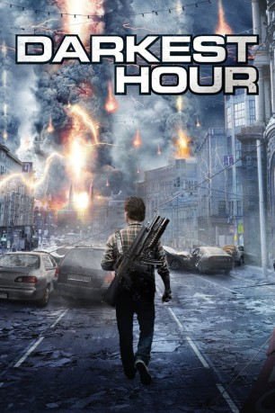

#11531 Darkest Hour
Alternativ: The Darkest Hour (Englischer Titel)
 
 IMDB-Wertung: 4.9 / 10
IMDB-Wertung: 4.9 / 10  Tomatometer: 12
Tomatometer: 12  Metascore: 18
Metascore: 18 
Es soll eine einzige große Party werden, doch es wird zum Kampf ums Überleben. Fünf Freunde reisen nach Moskau, um die faszinierende Metropole zu erleben. Doch dann kommt es zu einer Invasion aus dem All. Außerirdische, die kaum zu sehen sind, greifen die Erde an und fangen sofort an, die Menschheit zu töten. Die Invasoren können die Elektrizität kontrollieren und als tödliche Waffe einsetzen. Den Freunden gelingt es in den Untergrund zu fliehen und so zu überleben, während überirdisch die Menschheit nach und nach ausgerottet wird. Nach wenigen Tagen gleicht die einstige Metropole einer Geisterstadt. Die Gruppe fasst einen verzweifelten Entschluss: sie tritt zum Kampf gegen die außerirdische Macht an.
Jahr: 2011
Dauer: 89 Minuten
FSK: 12
Land: USA Studio: Summit EntertainmentTonspuren: DTS - ,
Untertitel: Deutsch,
Auflösung: 1080p (1920x800) Größe: 4136 MB
Genre: Action, Thriller, Horror, Sci-Fi, Abenteuer
Regisseur: Chris Gorak
Drehbuch: Jon Spaihts, Leslie Bohem, M.T. Ahern, Jon Spaihts
Soundtrack: Tyler Bates
Darsteller:
 Emile Hirsch als Sean
Emile Hirsch als Sean Olivia Thirlby als Natalie
Olivia Thirlby als Natalie Max Minghella als Ben
Max Minghella als Ben Rachael Taylor als Anne
Rachael Taylor als Anne Joel Kinnaman als Skyler
Joel Kinnaman als Skyler- Veronika Vernadskaya als Vika
- Yuriy Kutsenko als Matvei
- Nikolay Efremov als Sasha
- Georgiy Gromov als Boris
- Pyotr Fyodorov als Anton Batkin
- Ivan Gromov als Bartender No. 1
- Oleg Poddubnyy als First Policeman
- Irina Antonenko als Club Beauty
- Alexandra Samton als Girl in the bar (uncredited)
- Dato Bakhtadze als Sergei
- Artur Smolyaninov als Yuri
- Anna Rudakova als Tess
- Aleksandr Chernykh als Bartender No. 2
- Vasiliy Fursenko als Second Policeman
- Ilya Ivanov als Drunk Russian No. 1
- Sem Vanin als Drunk Russian No. 2
- Alya Nikulina als Old Woman
- Igor Nesvetaev als Brainy Navy Cadet
- Mariya Romanova als Russian Flight Attendant
- Vladislav Barkovskiy als Hefty Bouncer
- Valentina Soboleva als Girl Walking in Club
- Louis Leebe als Club DJ
- Katerina Budyakova als Girl at the DJ Booth
- Olga Zhuk als Clubgoer No. 1
- Tamara Zhukova als Clubgoer No. 2
- Maria Lavrova als Clubgoer No. 3
- Roman Cooperman als Airplane Passenger (uncredited)
- Sergey Kroshkin als Major Murzaliev (uncredited)
- Mikhail Mukhin als General (uncredited)
- Fedor Starykh als Clubgoer No. 4 (uncredited)
Datei: X:\NEU\Darkest Hour (2011, FSK12, 1920x800).mkv seit 22.07.2019
 Es gibt insgesamt 187 Filme in der Gruppe 'NEU'
Es gibt insgesamt 187 Filme in der Gruppe 'NEU'